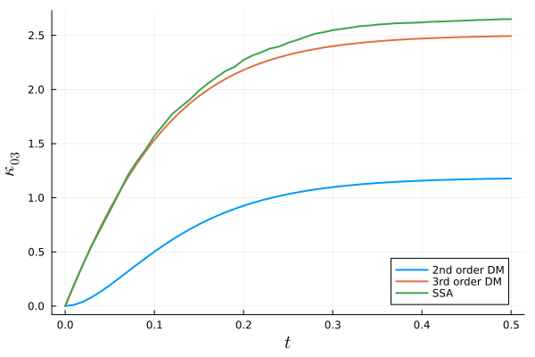

Derivative Matching Example
In this example, we aim to reproduce a number of results from the original derivative matching paper by Singh and Hespanha [1]. We consider the bimolecular reaction system given by:
\[\begin{align*} X_1 &\stackrel{c_1}{\rightarrow} 2X_1 + X_2, \\ X_1 + X_2&\stackrel{c_2}{\rightarrow} X_2. \end{align*}\]
The reaction network and its parameters can be defined as follows:
using Catalyst
rn = @reaction_network begin
(c₁), x₁ → 2x₁+x₂
(c₂), x₁+x₂ → x₂
end c₁ c₂
# parameter values
p = [1.0, 1.0]
# initial conditions
u0 = [20, 10]
# time interval to solve on
tspan = (0., 0.5)We are interested in extracting the time-evolution of a specific third order cumulant, $κ_{03}$, using second and third order moment expansions with derivative matching, and comparing the obtained estimates to the SSA prediction.
Let's start with a second order moment expansion and print out the third-order moment closure functions obtained with derivative matching:
using MomentClosure, Latexify
eqs2 = generate_raw_moment_eqs(rn, 2)
dm2_eqs = moment_closure(eqs2, "derivative matching")
latexify(dm2_eqs, :closure, print_all=true)\[\begin{align*} \mu{_{30}} =& \mu{_{10}}^{-3} \mu{_{20}}^{3} \\ \mu{_{21}} =& \mu{_{20}} \mu{_{01}}^{-1} \mu{_{10}}^{-2} \mu{_{11}}^{2} \\ \mu{_{12}} =& \mu{_{02}} \mu{_{01}}^{-2} \mu{_{10}}^{-1} \mu{_{11}}^{2} \\ \mu{_{03}} =& \mu{_{01}}^{-3} \mu{_{02}}^{3} \end{align*}\]
Note that all closure functions are consistent with the ones shown in Table II of [1]. We can then move on to solving the generated system of moment ODEs:
using OrdinaryDiffEq
u0map = deterministic_IC(u0, dm2_eqs) # assuming deterministic initial conditions
oprob = ODEProblem(dm2_eqs, u0map, tspan, p)
dm2_sol = solve(oprob, Tsit5(), saveat=0.01)Now the question is how can we extract the time evolution of the cumulant $\kappa_{03}$. Firstly, note that using the standard moment relationships it can be expressed in terms of raw moments as:
\[\begin{align*} \kappa_{03} = 2 \mu_{01}^3 - 3\mu_{02}\mu_{01} + \mu_{03} \end{align*}\]
As we were solving for moments up to second order, we do not have any direct information on the third order moment $\mu_{03}$. Nevertheless, we can manually approximate it using the corresponding closure function given above, i.e., $\mu_{03} = \mu_{01}^{-3} \mu_{02}^{3}$. The time trajectories of $\mu_{01}$ and $\mu_{02}$ can be extracted from dm2_sol and their order in the array can be checked with:
dm2_eqs.odes.states5-element Array{Term{Real,Nothing},1}:
μ₁₀(t)
μ₀₁(t)
μ₂₀(t)
μ₁₁(t)
μ₀₂(t)Finally, we can combine all the steps to obtain the $\kappa_{03}$ estimate:
μ₀₁ = dm2_sol[2, :]
μ₀₂ = dm2_sol[5, :]
μ₀₃ = (μ₀₁ .^(-3)) .* (μ₀₂ .^3)
dm2_κ₀₃ = 2 .* μ₀₁ .^3 .- 3 .* μ₀₂ .* μ₀₁ .+ μ₀₃Next we consider a third order moment expansion:
eqs3 = generate_raw_moment_eqs(rn, 3)
dm3_eqs = moment_closure(eqs3, "derivative matching")
latexify(dm3_eqs, :closure, print_all=true)\[\begin{align*} \mu{_{40}} =& \mu{_{10}}^{4} \mu{_{20}}^{-6} \mu{_{30}}^{4} \\ \mu{_{31}} =& \mu{_{01}} \mu{_{30}} \mu{_{10}}^{3} \mu{_{11}}^{-3} \mu{_{20}}^{-3} \mu{_{21}}^{3} \\ \mu{_{22}} =& \mu{_{01}}^{2} \mu{_{02}}^{-1} \mu{_{10}}^{2} \mu{_{11}}^{-4} \mu{_{12}}^{2} \mu{_{20}}^{-1} \mu{_{21}}^{2} \\ \mu{_{13}} =& \mu{_{03}} \mu{_{10}} \mu{_{01}}^{3} \mu{_{02}}^{-3} \mu{_{11}}^{-3} \mu{_{12}}^{3} \\ \mu{_{04}} =& \mu{_{01}}^{4} \mu{_{02}}^{-6} \mu{_{03}}^{4} \end{align*}\]
As expected, the closure functions agree with those given in Table III of [1]. We again check the order of variables
dm3_eqs.odes.states9-element Array{Term{Real,Nothing},1}:
μ₁₀(t)
μ₀₁(t)
μ₂₀(t)
μ₁₁(t)
μ₀₂(t)
μ₃₀(t)
μ₂₁(t)
μ₁₂(t)
μ₀₃(t)and solve the moment equations, computing the required cumulant:
u0map = deterministic_IC(u0, dm3_eqs)
oprob = ODEProblem(dm3_eqs, u0map, tspan, p)
dm3_sol = solve(oprob, Tsit5(), saveat=0.01, abstol=1e-8, reltol=1e-8)
μ₀₁ = dm3_sol[2,:]
μ₀₂ = dm3_sol[5,:]
μ₀₃ = dm3_sol[9,:]
dm3_κ₀₃ = 2 .* μ₀₁ .^ 3 - 3 .* μ₀₂ .* μ₀₁ .+ μ₀₃Note that we could have also obtained $\kappa_{03}$ estimate in an easier way by using central moment equations, as third order central moments are equal to the corresponding third order cumulants:
central_eqs3 = generate_central_moment_eqs(rn, 3)
dm3_central_eqs = moment_closure(central_eqs3, "derivative matching")
u0map = deterministic_IC(u0, dm3_central_eqs)
oprob = ODEProblem(dm3_central_eqs, u0map, tspan, p)
dm3_central_sol = solve(oprob, Tsit5(), saveat=0.01, abstol=1e-8, reltol=1e-8)
# check that the two estimates are equivalent
dm3_κ₀₃ ≈ dm3_central_sol[9,:]trueThe last ingredient we need for a proper comparison between the second and third order moment expansions is a reference value predicted by the SSA. We can simulate $10^5$ SSA trajectories as follows:
using DiffEqJump
dprob = DiscreteProblem(rn, u0, tspan, p)
jprob = JumpProblem(rn, dprob, Direct(), save_positions=(false, false))
ensembleprob = EnsembleProblem(jprob)
@time sol_SSA = solve(ensembleprob, SSAStepper(), saveat=0.01, trajectories=100000)3.874558 seconds (7.45 M allocations: 714.845 MiB, 46.60% gc time)The time evolution of $\kappa_{03}$ can be extracted from SSA data using the get_cumulants function:
ssa_κ₀₃ = get_cumulants(sol_SSA, 3)[0, 3]Finally, we plot the results:
using Plots, LaTeXStrings
plot(dm2_sol.t, dm2_κ₀₃, lw=2, label="2nd order DM")
plot!(dm2_sol.t, dm3_κ₀₃, lw=2, label="3rd order DM")
plot!(dm2_sol.t, ssa_κ₀₃, lw=2, label="SSA")
plot!(ylabel=L"\kappa_{03}", xlabel=L"t", guidefontsize=14, legend=:bottomright)
We observe that the third order moment truncation using derivative matching performs significantly better than the second order truncation, accurately matching the true SSA prediction (consistent with the figure in [1]).
It is also interesting to note that the closure functions of third order moments obtained using derivative matching and log-normal closures are equivalent. We can see that it is indeed the case by printing out the log-normal closure functions
ln2_eqs = moment_closure(eqs2, "log-normal")
latexify(ln2_eqs, :closure, print_all=true)\[\begin{align*} \mu{_{30}} =& \mu{_{10}}^{-3} \mu{_{20}}^{3} \\ \mu{_{21}} =& \mu{_{20}} \mu{_{01}}^{-1} \mu{_{10}}^{-2} \mu{_{11}}^{2} \\ \mu{_{12}} =& \mu{_{02}} \mu{_{01}}^{-2} \mu{_{10}}^{-1} \mu{_{11}}^{2} \\ \mu{_{03}} =& \mu{_{01}}^{-3} \mu{_{02}}^{3} \end{align*}\]
and the corresponding derivative matching functions obtained previously:
latexify(dm2_eqs, :closure, print_all=true)\[\begin{align*} \mu{_{30}} =& \mu{_{10}}^{-3} \mu{_{20}}^{3} \\ \mu{_{21}} =& \mu{_{20}} \mu{_{01}}^{-1} \mu{_{10}}^{-2} \mu{_{11}}^{2} \\ \mu{_{12}} =& \mu{_{02}} \mu{_{01}}^{-2} \mu{_{10}}^{-1} \mu{_{11}}^{2} \\ \mu{_{03}} =& \mu{_{01}}^{-3} \mu{_{02}}^{3} \end{align*}\]
However, the equivalence holds only for third order moments. For example, the closure functions of fourth order moments differ:
ln3_eqs = moment_closure(eqs3, "log-normal")
latexify(ln3_eqs, :closure, print_all=true)\[\begin{align*} \mu{_{40}} =& \mu{_{10}}^{-8} \mu{_{20}}^{6} \\ \mu{_{31}} =& \mu{_{01}}^{-2} \mu{_{10}}^{-6} \mu{_{11}}^{3} \mu{_{20}}^{3} \\ \mu{_{22}} =& \mu{_{02}} \mu{_{20}} \mu{_{01}}^{-4} \mu{_{10}}^{-4} \mu{_{11}}^{4} \\ \mu{_{13}} =& \mu{_{01}}^{-6} \mu{_{02}}^{3} \mu{_{10}}^{-2} \mu{_{11}}^{3} \\ \mu{_{04}} =& \mu{_{01}}^{-8} \mu{_{02}}^{6} \end{align*}\]
latexify(dm3_eqs, :closure, print_all=true)\[\begin{align*} \mu{_{40}} =& \mu{_{10}}^{4} \mu{_{20}}^{-6} \mu{_{30}}^{4} \\ \mu{_{31}} =& \mu{_{01}} \mu{_{30}} \mu{_{10}}^{3} \mu{_{11}}^{-3} \mu{_{20}}^{-3} \mu{_{21}}^{3} \\ \mu{_{22}} =& \mu{_{01}}^{2} \mu{_{02}}^{-1} \mu{_{10}}^{2} \mu{_{11}}^{-4} \mu{_{12}}^{2} \mu{_{20}}^{-1} \mu{_{21}}^{2} \\ \mu{_{13}} =& \mu{_{03}} \mu{_{10}} \mu{_{01}}^{3} \mu{_{02}}^{-3} \mu{_{11}}^{-3} \mu{_{12}}^{3} \\ \mu{_{04}} =& \mu{_{01}}^{4} \mu{_{02}}^{-6} \mu{_{03}}^{4} \end{align*}\]
This difference is expected as fourth order moments using log-normal closure are expressed exclusively in terms of first and second order moments, whereas derivative matching additionally incorporates third order moment information. Singh and Hespanha [1, 2] elaborate on this point: as there is no unique way to define higher order moment closure functions for log-normal distribution, both closures are consistent with the assumption that the population is jointly log-normally distributed. We urge the reader to consult the mentioned papers [1, 2] and the references therein for a more complete discussion comparing the two approaches.
References
[1]: A. Singh and J. P. Hespanha, "Lognormal Moment Closures for Biochemical Reactions", in Proceedings of the 45th IEEE Conference on Decision and Control, ISSN:0191-2216 (Dec. 2006), pp. 2063–2068. https://doi.org/10.1109/CDC.2006.376994
[2]: A. Singh and J. P. Hespanha, "Approximate Moment Dynamics for Chemically Reacting Systems", IEEE Transactions on Automatic Control 56, 414–418 (2011). https://doi.org/10.1109/TAC.2010.2088631